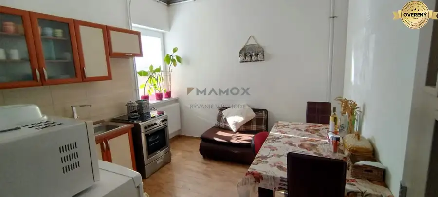
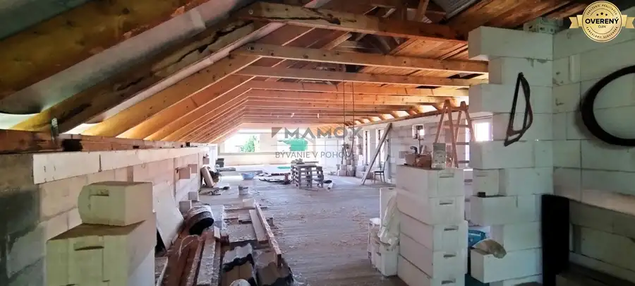
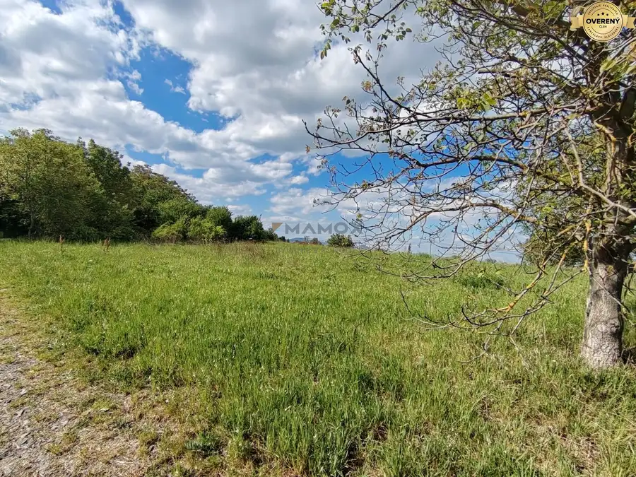

Vaša oáza pokoja v Branči- 723m2 v rekreačnej oblasti. Branč,okr.NR.
Branč
- Plocha723 m²
- Poschodie0.
- Vlastníctvoosobné
O nehnuteľnosti
Predám príjemný pozemok v obci Branč, vzdialenej od Nitry cca 13km. Obec je veľmi dobre dostupná autobusovou, železničnou a z Nitry aj MHD dopravou.
Pozemok sa nachádza vo vinohradníckej oblasti nad obcou, typickej pre rekreačné stavby a viničné domčeky, v tichom a peknom, zelenom prostredí, iba cca 500m od najbližšej vlakovej zastávky. Určite odporúčam obhliadku. Nájdete tu ideálne miesto pre váš relax a možno aj prechodný domov. Verte mi, že toto je miesto, kde ráno aj káva chutí lepšie.
Celková výmera pozemku je 723m2. Rozmery samotného pozemku sú cca 10x72m. Je udržiavaný a takmer rovinatý. Mierny, takmer nebadateľný sklon od cesty zaručuje, že pozemok má peknú priestorovú dynamiku a nepôsobí fádne. A zároveň, v súvislosti s novou stavbou nevyžaduje žiadne nákladné terénne úpravy.
Pozemok, prípadne budúcu stavbu, je možné pripojiť do distribučnej siete EE. Ostatné siete v tejto lokalite nie sú dostupné. Pri takomto type nehnuteľností sa odporúča zriadiť si vlastnú studňu. V lokalite je dostupná podzemná voda v hĺbke cca 25 m (potvrdené susednými studňami).
V tejto lokalite je možné postaviť domčeky so zastavanou plochou 50m2, typ zástavby: voľná uličná zástavba do 1NP (+ ustúpené podlažie), vyjadrenie ohľadne UPI k dispozícii.
Cena nehnuteľnosti je 42.000,-€ a v cene je zahrnutý kompletný realitný a právny servis vrátane poplatkov spojených s prevodom nehnuteľnosti.
Obhliadky sú možné aj počas víkendu, termín si treba dohodnúť telefonicky na alebo prostredníctvom mailu na adrese
Parametre
| Rozloha pozemku | 723 m² |
|---|---|
| Poschodie | prízemie |
| Vlastníctvo | osobné |
| Voda | nie |
| El. napätie | 230V |
| Plyn | nie |
| Kanalizácia | nie |
| Terén | mierny svah |
| Prístupová cesta | neupravená cesta |
| Dátum zverejnenia | 4. 5. 2026 |
Kde to je
Mohlo by Vás zaujímať

Domy a budovy10 349 000 €Veľkorysý priestor na Chrenovej čaká na vašu kreativitu. Nitra Nitra 500 m² Táto stavba svojou veľkorysou úžitkovou plochou (2x cca 250 m²) vám otvára dvere k viacerým možnostiam: Spojenie práce a bývania - prvé podlažie…
Rodinné domy10 349 000 €500m2 priestoru na Chrenovej, ktorý sa prispôsobí každej vašej vízii. Nitra 500 m² Predáme výnimočnú nehnuteľnosť v srdci vyhľadávanej lokality Nitra – Chrenová, ktorá spája pokoj pôvodnej zástavby rodinných domov s perfektnou…
Pozemok3 73 000 €Veľkorysý a zaujímavý slnečný pozemok v obci Branč, iba 12km od NR. Branč 1301 m² Ak hľadáte priestranný, slnečný pozemok, kde si môžete vytvoriť bohaté zelené zázemie s maximálnym súkromím a výbornou dostupnosťou do Nitry alebo…